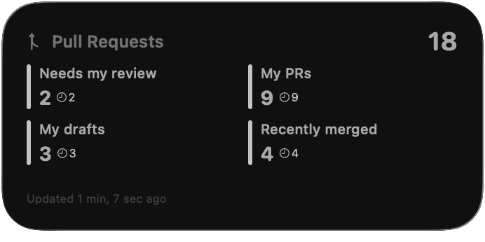
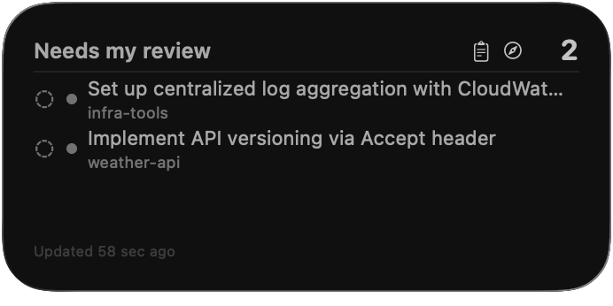

Pull Request Pilot turns GitHub searches into live views of the pull requests that need you: in your menu bar, on your desktop and in your notifications. Native, fast and private by design.
Needs my reviewnowPullRequestPilot/weather-api#7 Implement API versioning via Accept header
Native SwiftUI app
No account, no tracking
Token kept in your Keychain
Open source, MIT licensed
Features
Built for the way you review.
Every view is a search you already know how to write. Pull Request Pilot keeps it fresh, tells you what's new and lets you act without opening another browser tab.
Views are GitHub searches
Start from four presets or write any search, issues included. Results are grouped by organization and repository, with review state, checks, labels, open threads and diff size on every row. Switch on hide-reviewed to drop what you've already looked at.
Open a pull request in your browser, VS Code, iTerm or cmux, copy its branch, turn it into a draft or mark it ready, and narrow a view to an author, label or repository, or exclude them.
Open in
Copy URL
Copy Branch
Convert to Draft
Filter by author "mona"
Exclude author "mona"
Filter by label "bug"
Exclude label "bug"
The whole story in one panel
Click a pull request for its timeline, comments, reviewers and checks, with the ones required to merge marked. Double-click to open it on GitHub.
buildRequired
unit-testsRequired
integration-tests
Stacks, folded together
When a pull request targets another one's branch, the whole stack shows up as a single chain you can expand.
Add query parser #413
↳ Evaluate filters #42
↳ Wire up the CLI #43
Straight to your checkout
Point it at the folders where you clone. It indexes branches and worktrees in the background and opens the matching checkout in one click.
VS CodeiTermcmux
Matched by branch name, then worktree, then commit.
Know what's new
Ring the bell on a view to get a notification when a pull request lands in it. Click the notification to go straight there. The menu bar icon counts what you haven't seen yet.
Made for the keyboard
Jump to a view ⌘1…9
Previous or next view ⌘[]
Refresh ⌘R
New view ⌘N
Steady when GitHub isn't
Offline or asleep: pauses, then catches up
Rate-limited: waits it out, results stay
Revoked token: asks for a new one, views stay
Widgets
Your queue, right on the desktop.
Two widgets, each in small, medium and large. Click one to open its view in the app.
PR Overview puts the count of every view side by side, with how many still wait on a review.
PR View lists the pull requests of the view you pick, with their review and check status.
Always current. The app refreshes them whenever their content changes, and leaves them alone otherwise.


Under the hood
Small, native and open.
Written in Swift with SwiftUI and WidgetKit, sandboxed, and reviewed for the Mac App Store. The complete source is on GitHub.
0third-party dependencies
Swift 6with strict concurrency checking
14+macOS Sonoma or later
MITopen-source license
Privacy
Between you and GitHub. Nobody else.
There is no account to create and no server behind the app. It talks to GitHub with your token and to nothing else: no analytics, no crash reporting, no ads.
Locked in your Keychain
Your token is stored in the macOS Keychain and only ever sent to api.github.com.
Kept on your Mac
Views, settings and the widgets' snapshot stay inside the app's sandbox.
Open to inspection
Every line is public under the MIT license, so you can check all of this for yourself.